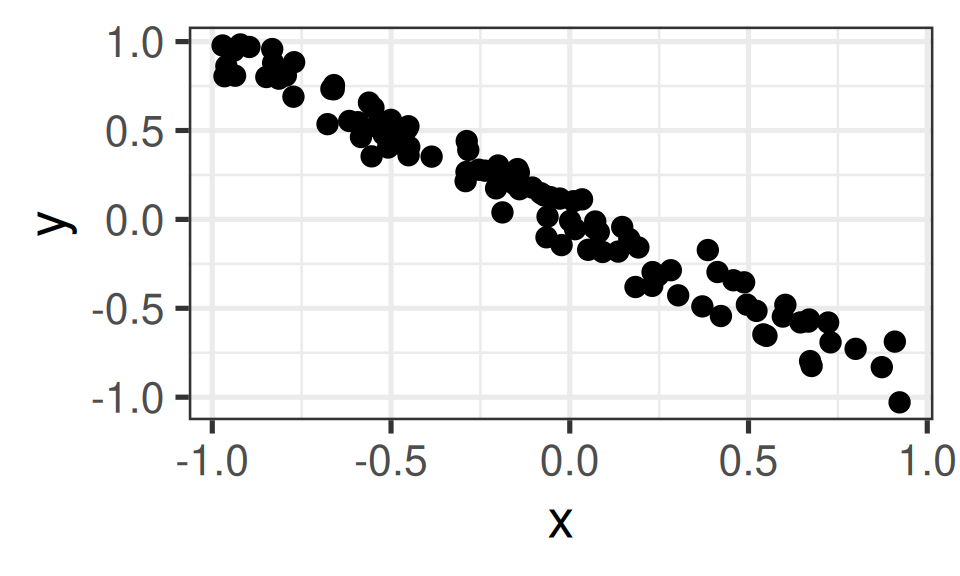
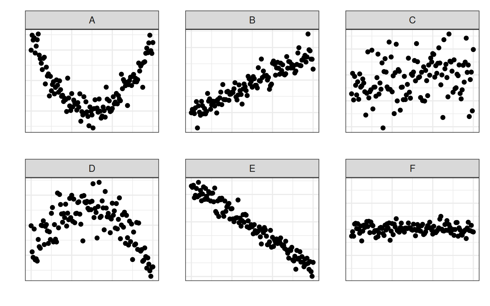
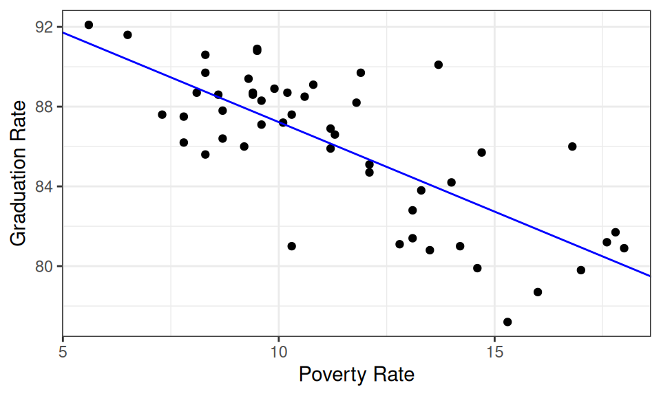
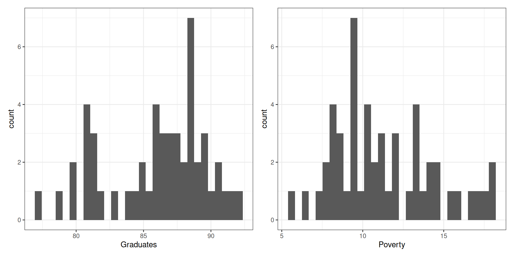
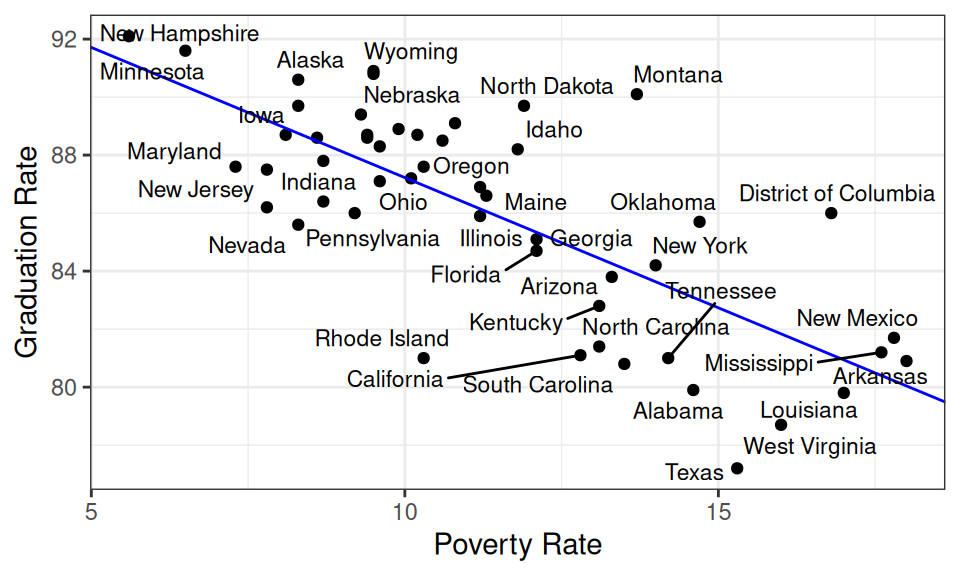

Summarizing Numerical Associations
Agenda
- Announcements
- Reading Questions
- Break
- Worksheet: Summarizing Numerical Associations
- If time permits: the correlation coefficient \(r\)
Announcements
- Lab 2, part 2 shortened: see Ed Announcement
- Quiz 2 tomorrow (make sure you arrive on time)
- Portfolio 2 due tomorrow at 5pm
- Sorry about the bCourses announcement; that was meant for my other class. Group tutoring is tomorrow from 5-7pm in Evans 340
Reading Questions
- Please put your laptops under your desk and your phones away.
- Write your name, ID, and bubble in Version “A” on your answer sheet.
- You may work only with those at your table!
Describe the meaning of an association between two variables.
A: A change in the values of the first variable directly causes a change in the values of the second variable.
B: The values of the second variable vary depending on the values of the first variable.
C: The values of the second variable do not vary depending on the values of the first variable.
00:30
The correlation coefficient, \(r\),between two numerical variables is -.3. What does that tell you about the slope of the corresponding least squares line? Hint: think carefully about what kinds of values standard deviation can take.
A: It will be negative
B: It will be positive
C: It may either be negative or positive.
01:00
Given two numerical variables \(x\) and \(y\) and a linear model which relates them, what is the correct way to calculate a residual? Hint: What does a positive value for a residual mean visually?
- A: \(\hat{y}_i - y_i\)
- B: \(\hat{y}_i - x_i\)
- C: \(y_i - \hat{y}_i\)
- D: \(\hat{x}_i - x_i\)
- E: The correct answer is not here.
00:40
I have a data frame called df with two numerical columns, x and y. Which of the following lines of code creates a linear model model which explains y as a function of x?
- A:
model <- lm(x ~ y, data = df) - B:
model <- lm(y, x, data = df) - C:
model <- lm(x, y, data = df) - D:
model <- lm(y ~ x, data = df) - E:
model <- lm(y |> x, data = df)
00:40
Which piece of code creates a two-column dataframe with the fitted values and residuals of the model as columns?
- A
df |>
mutate(fitted_values = fitted(model),
residuals = resid(model)) |>
select(fitted_values,
residuals)- B
df |>
summarise(fitted_values = fitted(model),
residuals = resid(model)) |>
filter(fitted_values,
residuals)00:40
Break
05:00
The correlation coefficient \(r\)
Worksheet: Summarizing Numerical Associations
05:00
Appendix - more practice!
Estimate the correlation

What is the (Pearson) correlation coefficient between these two variables?
01:00

Which four plots exhibit the strongest association?
01:00
Pearson Correlation and Scale
Pearson Correlation and Scale
x y
1 -8.00 -1.307007369
2 -7.95 -0.466886973
3 -7.90 -1.317638373
4 -7.85 1.008059015
5 -7.80 1.153714017
6 -7.75 0.136000314
7 -7.70 1.081268517
8 -7.65 0.027234440
9 -7.60 -0.755489564
10 -7.55 0.643581028
11 -7.50 -2.221816425
12 -7.45 -0.352711462
13 -7.40 0.788325702
14 -7.35 0.348209977
15 -7.30 0.888132692
16 -7.25 1.494640228
17 -7.20 0.539665177
18 -7.15 1.534245783
19 -7.10 -0.636288267
20 -7.05 1.400750746
21 -7.00 0.857266821
22 -6.95 0.689240640
23 -6.90 -0.578689332
24 -6.85 -0.247484190
25 -6.80 -1.616711187
26 -6.75 -0.211921880
27 -6.70 -1.389650022
28 -6.65 -0.667030427
29 -6.60 0.265923179
30 -6.55 0.368512913
31 -6.50 0.159370185
32 -6.45 -0.803029578
33 -6.40 -1.181853575
34 -6.35 0.799141786
35 -6.30 -0.119741600
36 -6.25 1.055099362
37 -6.20 0.260610303
38 -6.15 1.215058556
39 -6.10 -2.093776227
40 -6.05 -0.340475843
41 -6.00 1.098181964
42 -5.95 -1.022920292
43 -5.90 0.997308309
44 -5.85 0.442282185
45 -5.80 2.024841893
46 -5.75 -0.206236931
47 -5.70 -0.366921396
48 -5.65 -0.540982671
49 -5.60 0.326545855
50 -5.55 1.185875818
51 -5.50 0.163270582
52 -5.45 -0.252746010
53 -5.40 -0.538783647
54 -5.35 0.239830058
55 -5.30 0.227238979
56 -5.25 0.146973095
57 -5.20 1.206565164
58 -5.15 0.274237725
59 -5.10 0.291223416
60 -5.05 -0.048435420
61 -5.00 -0.160503335
62 -4.95 0.982662625
63 -4.90 -0.009812706
64 -4.85 -1.236449694
65 -4.80 -0.220086594
66 -4.75 0.916450245
67 -4.70 0.312158589
68 -4.65 -0.271222289
69 -4.60 -0.362834150
70 -4.55 0.690127669
71 -4.50 0.954579372
72 -4.45 -1.002334741
73 -4.40 -0.827510811
74 -4.35 -0.481050964
75 -4.30 0.213284850
76 -4.25 0.694018655
77 -4.20 0.318705891
78 -4.15 1.359291786
79 -4.10 0.299499214
80 -4.05 -0.136853535
81 -4.00 -0.907524278
82 -3.95 0.580039124
83 -3.90 -0.451761432
84 -3.85 -0.637651429
85 -3.80 -0.377287558
86 -3.75 -0.108975033
87 -3.70 0.266174878
88 -3.65 1.950537958
89 -3.60 2.481797153
90 -3.55 0.024020307
91 -3.50 -0.271974465
92 -3.45 -0.324420253
93 -3.40 0.914990966
94 -3.35 -0.177070403
95 -3.30 1.668125591
96 -3.25 -0.196626395
97 -3.20 0.909735944
98 -3.15 0.379802619
99 -3.10 -0.717674077
100 -3.05 -0.137978296
101 -3.00 -0.032596143
102 -2.95 -1.151078285
103 -2.90 -0.035147120
104 -2.85 1.289653594
105 -2.80 1.301664628
106 -2.75 -1.314453018
107 -2.70 0.279983464
108 -2.65 -0.134496134
109 -2.60 -0.993968666
110 -2.55 -1.125493956
111 -2.50 -0.585075814
112 -2.45 -0.360440229
113 -2.40 -0.128946258
114 -2.35 -1.763949074
115 -2.30 0.249921212
116 -2.25 1.356315758
117 -2.20 -0.221241869
118 -2.15 -0.255945298
119 -2.10 0.764032808
120 -2.05 -0.429023148
121 -2.00 -0.506416626Pearson Correlation and Scale
Pearson Correlation and Scale
Pearson Correlation and Scale
Pearson Correlation and Scale
Pearson Correlation and Scale
Pearson Correlation and Scale
Describing Associations
When considering the structure in a scatter plot, pay attention to:
- The strength of the association
- How much does the conditional distribution of y change when you move along the x?
- The shape of the association
- Linear? Quadratic? Cubic or beyond?
- The direction of the (linear) association
- Positive or negative?

Guess: Which state has the highest poverty rate? The lowest?


Which state has the highest graduation rate given its poverty rate?
01:00
Worksheet: Summarizing Numerical Associations
20:00
Break
05:00
Lab Part 2: Flights
25:00